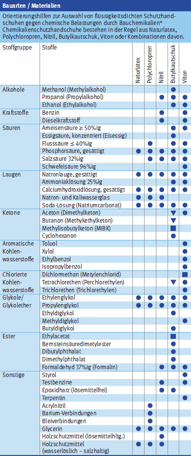
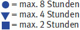

Gefährdungen
- Beim Umgang mit Baustoffen, Reinigungsmitteln oder im Sanierungsbereich bestehen Gefährdungen für die Haut.
- Durch das Tragen flüssigkeitsdichter Handschuhe kann die Haut durch Schwitzen aufgeweicht werden.
- Handschuhe können von Maschinen erfasst und eingezogen werden und Schnittverletzungen oder Quetschungen sind die Folge.
Auswahl/Benutzung
- Lassen sich durch technische und organisatorische Maßnahmen Hand- und Hautverletzungen oder Hautkontakt mit Gefahrstoffen und Zubereitungen nicht vermeiden, sind vom Unternehmer Schutzhandschuhe zur Verfügung zu stellen und von den Beschäftigten zu benutzen. Unterschieden werden Schutzhandschuhe mit Schutz gegen:
- thermische Belastung,
- mechanische Belastung,
- chemische Belastung,
- biologische Arbeitsstoffe (z. B. Keime, Viren, Bakterien),
- ultraviolette Strahlen,
- elektrostatische Aufladung,
- elektrische Spannung,
- Vibration.
- Zur Auswahl geeigneter Schutzhandschuhe Gefährdungen (chemische, biologische oder physikalische Einwirkungen) ermitteln und beurteilen.
- Betriebsanweisungen sind zu erstellen und anhand dieser die Beschäftigten zu unterweisen. Die Handhabung von Schutzhandschuhen muss geübt werden.
- Zur Vermeidung von übermäßigem Schwitzen sind Baumwollunterziehhandschuhe empfehlenswert.
Erweiterung der Prüfchemikalien:



* Bei der Auswahl der Handschuhe sind neben dem einwirkenden Stoff (Chemikalie) auch Konzentration, Temperatur und Benutzungsdauer sowie die Wirkung in Stoffgemischen zu berücksichtigen. Durchbruchszeit (Permeation) für Chemikalien, die nicht in der Herstellerinformation aufgeführt sind, beim Hersteller erfragen. Auswahlhilfen werden im Gefahrstoffinformationssystem der BG BAU – WINGIS (www.wingisonline.de) – angeboten.
Zusätzliche Informationen der Informationsbroschüre des Herstellers entnehmen oder direkt beim Hersteller der Produkte einholen.
Kennzeichnung
- Bei Schnitt- oder Stichgefahr Handschuhe mit hoher Schnitt- und Abriebfestigkeit verwenden:
- Bei chemischen oder biologischen Gefährdungen nur Chemikalienschutzhandschuhe verwenden und Durchbruchszeit der gefährlichen Stoffe aus Produktdatenblatt des Schutzhandschuhs entnehmen oder beim Hersteller erfragen.
- Mit "Erlenmeyerkolben" gekennzeichnete Schutzhandschuhe sind mindestens gegen drei Chemikalien geprüft und haben höhere Leistungsstufen:
- In der Herstellerinformation steht, wofür der Handschuh einsetzbar ist. Herstellerinformation beachten:
- Kennzeichnung des
Arbeitsbereiches:
07/2021